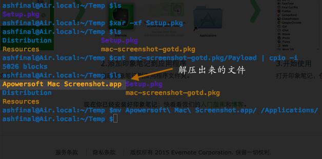
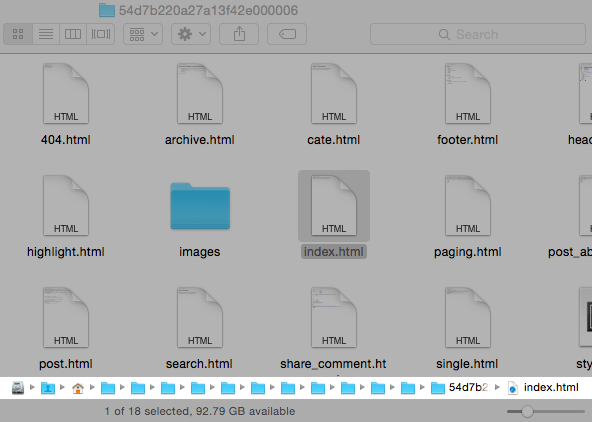

缘起
最近没事就使用 iPhone 上的 iBooks 来阅读点东西，渐渐喜欢上了该应用。相较于波澜不惊的 Mac 版，iPhone 内置的 iBooks 应用翻页效果堪称惊艳，而其它功能如书签、标注、跳转等用户体验也相当不错。无奈书籍资源实在太少，遂产生制作/修改 ePub 格式电子书的念头。作为「原生党」，自然而然就想到使用 Pages 来尝试制作啦。完成以后感觉整体效果还不错，于是把制作过程记录一下，希望于读者朋友们能够有所参考。
最近没事就使用 iPhone 上的 iBooks 来阅读点东西，渐渐喜欢上了该应用。相较于波澜不惊的 Mac 版，iPhone 内置的 iBooks 应用翻页效果堪称惊艳，而其它功能如书签、标注、跳转等用户体验也相当不错。无奈书籍资源实在太少，遂产生制作/修改 ePub 格式电子书的念头。作为「原生党」，自然而然就想到使用 Pages 来尝试制作啦。完成以后感觉整体效果还不错，于是把制作过程记录一下，希望于读者朋友们能够有所参考。
有时候我们可能需要解包 pkg 格式的安装文件包，在 macOS 系统下完成该操作并不需要你额外再安装软件，系统内置的命令就可以。步骤也比较简单：
xar -xf Setup.pkg
cat mac-screenshot-gotd.pkg/Payload | cpio -i

鉴于截图部分已经很清晰明白，就不多废话了。参考资料来自：这里
原文讲的是 Linux 系统下解压 PKG 文件，步骤略有不同。有需要请自取。
最近在学习 ImageMagick 图像处理命令，在微博上以 #ImageMagick每日技巧# 为标签分享了一些内容。觉得 ImageMagick 真的是很强大的工具，于是趁空闲尝试把几行命令用 AppleScript 包装起来，就这样发布出来了 …… 当然这里分享的仅是个人觉得有点难记的命令，简单的直接终端里敲就可以。下载链接在这里： ImageMagick app ，运行需要 ImageMagick 命令行支持，推荐使用 brew 进行安装：
brew install imagemagick
安装完成版本应该是 6.9.1-0 ，执行路径为 /usr/local/Cellar/imagemagick/6.9.1-0/bin/ 。
无论你是科技博客撰写软件教程，还是初学编程自行编译依赖库源码，甚至是给亲戚、网友等远程指导解决电脑问题 …… 很多种情况下你需要输入文件路径(有时候真的很长的文件路径)，本文总结了 Mac OS X 下快速输入文件路径的几种方法。高手请直接路过，谢谢～

事情起因是这样的：前两天有人反馈博客不支持 RSS 订阅功能。笔者一寻思，貌似 RSS 订阅确实是博客必备哈。可是，leanote 目前本身并没有这一功能。于是，笔者转而寻找外部的 RSS Feed 生成工具。可是搜索半天，找到的要么是被墙访问速度慢，要么死贵需要付费(当然最终找到了够用的了)。小发呆了一会，突然转念一想，读者可能就是想在文章发布时能方便及时地知道么？使用系统自带的 Web Clip 功能就够用啦。